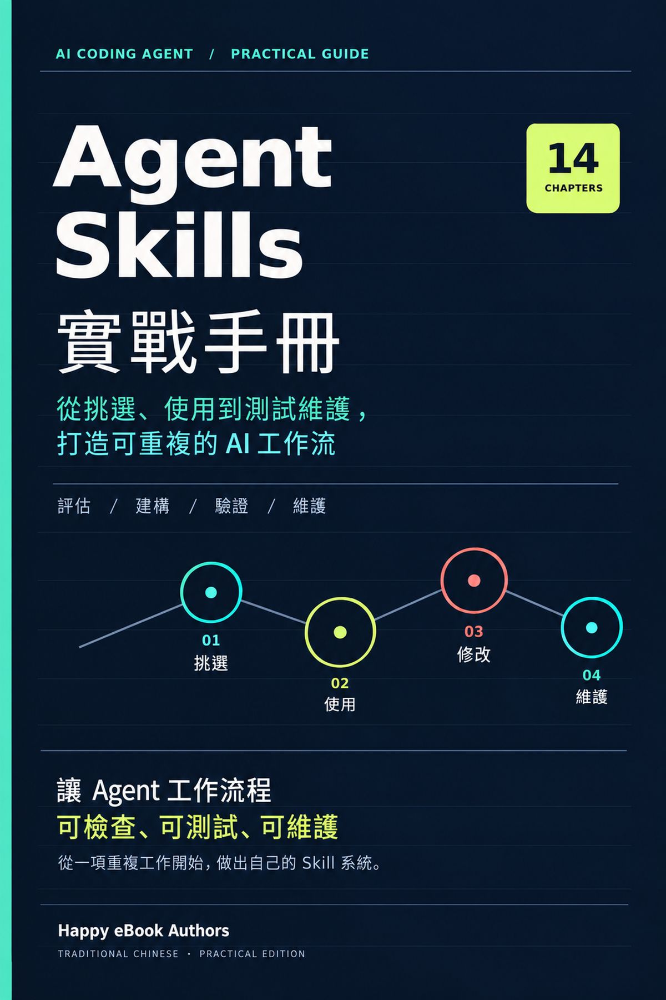

電子書
Agent Skills 實戰手冊
從挑選、使用到測試與維護，完整掌握 Agent Skills 的實戰方法，打造可重複、可驗證、可持續維護的 AI 工作流

Agent Skills 實戰手冊
從挑選、使用到測試與維護，完整掌握 Agent Skills 的實戰方法，打造可重複、可驗證、可持續維護的 AI 工作流
從挑選、使用到測試與維護，完整掌握 Agent Skills 的實戰方法，打造可重複、可驗證、可持續維護的 AI 工作流
這本書適合誰？
這本書適合已經用過 AI 程式助理、但發現每次結果都不太一樣的開發者與技術教師。如果你希望把提示、檢查步驟與維護規則固定下來，讓工作流可以重複執行、也可以交給別人接手，這本手冊的重點正好對應你的需求。
你會學到什麼
- 從既有工作流中找出值得寫成 Skill 的重複任務，判斷什麼該自動化、什麼該保留人工判斷。
- 寫清楚技能的觸發條件、輸入輸出與驗收標準，讓 AI 知道何時使用、如何才算完成。
- 用小型範例測試技能：故意換輸入、省略參數或加入錯誤資料，觀察技能是否仍能正確回報。
- 建立版本與維護習慣，記錄每次修改原因，避免技能越疊越多卻沒有人知道差異在哪裡。
怎麼搭配本站內容
本站的〈iPAS AI 初級怎麼準備？〉示範如何用考綱與錯題建立判斷力，和本書強調的「可驗證」思路相通；讀完可接著看 AI Agent 學習路線，把技能放進完整工作流。
In English: A hands-on guide to building reusable, testable, and maintainable Agent Skills — from choosing a repetitive task to defining triggers, acceptance criteria, and versioning. An original reading guide by Happy eBook.